Cytoscape uses a Zoomable User Interface for navigating and viewing networks. ZUIs use two mechanisms for navigation: zooming and panning. Zooming increases or decreases the magnification of a view based on how much or how little a user wants to see. Panning allows users to move the focus of a screen to different parts of a view.
Zoom Cytoscape provides two mechanisms for zooming, either using mouse gestures or buttons on the toolbar. Use the zooming buttons located on the toolbar to zoom in / out of the interaction network shown in the current network display. Zoom icons are detailed below:
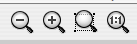
From Left to Right:
- Zoom Out
- Zoom In
- Zoom Selected Region
- Zoom out to Display all of Current Network
You can also zoom in/out by holding down the right mouse button and moving the mouse to the right (zoom in) or left (zoom out).
Pan You can pan the network image by holding down the middle mouse button and moving the mouse. You can also pan the image by holding down the left mouse button over the blue box in the Network Overview panel in the lower left hand of the Cytoscape desktop.
Select Click the left mouse button on a node or edge to select that object. You can hold down the Shift key to select more than one node/edge or you can hold down the left mouse button and drag the mouse to select groups of nodes/edges.
Context Click the right mouse button on a node/edge to launch a context sensitive menu with additional information about the node/edge.
The Layout menu has an array of features for organizing the network visually according to one of several algorithms, aligning and rotating groups of nodes, and adjusting the size of the network. Most of these features are available from plugins that are packaged with Cytoscape 2.3. Some of the layout algorithms provided with Cytoscape 2.3 are:
Cytoscape Spring-embedded Layout
Spring-embedded layout is based on a “force-directed” paradigm. Network nodes are treated like physical objects that repel each other, such as electrons. The connections between nodes are treated like metal springs attached to the pair of nodes. These springs repel or attract their end points according to a force function. The layout algorithm sets the positions of the nodes in a way that minimizes the sum of forces in the network. This algorithm is available from the Layout → Cytoscape Layouts → Spring Embedded menu item. A sample screen shot is provided below:
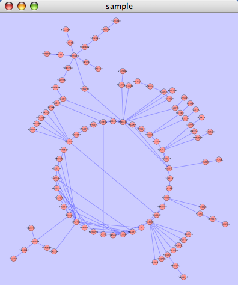 yFiles Circular Layout
This algorithm produces layouts that emphasize group and tree structures within a network. It partitions the network by analyzing its connectivity structure, and arranges the partitions as separate circles. The circles themselves are arranged in a radial tree layout fashion. This algorithm is available from the Layout → yFiles → Circular menu item.
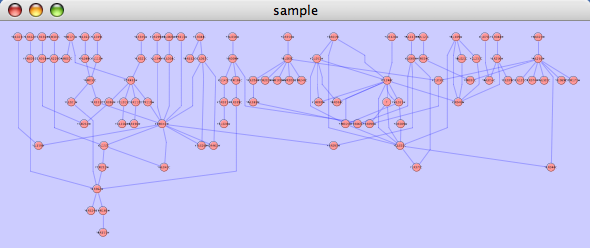 yFiles Hierarchical Layout
The hierarchical layout algorithm is good for representing main direction or flow within a network. Nodes are placed in hierarchically arranged layers and the ordering of the nodes within each layer is chosen in such a way that minimizes the number of edge crossings. This algorithm is available from the Layout → yFiles → Heirarchical menu item.
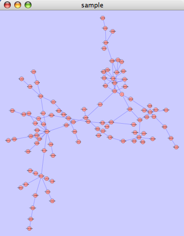 yFiles Organic Layout
The organic layout algorithm is a kind of spring-embedded algorithm that combines elements of the other algorithms to show the clustered structure of a graph. This algorithm is available from the Layout → yFiles → Organic menu item.
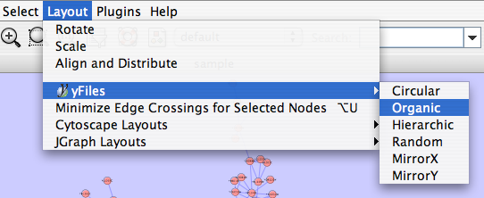
Several other alignment algorithms, including a selection from the JGraph project (http://jgraph.sourceforge.net), are also available under the Layout menu.
The simplest method to manually layout a network is to click on a node and drag the node. If you select multiple nodes, all of the selected nodes will be moved together.
Edge Handles
A little known feature! If you select an edge and then Ctrl-left-click on the edge, an edge "handle" will appear. This handle can be used to change the shape of the line. To remove a handle, simply Ctrl-left-click on the handle again.
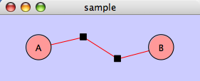
The Select → Edges menu has two menu items that provide further control: "Smooth Selected Edges" turns an edge consisting of line segments into a smoothed bezier curve, and "Straighen Selected Edges" turns a curved edge back into line segments.
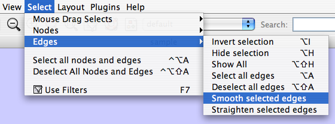
Rotate
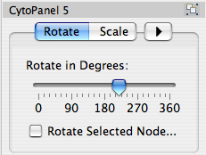
The Layout → Rotate menu opens the Rotate dialog. Rotate will either rotate the entire network or a selected portion of the network. The image below shows a network with selected nodes rotated.
Before
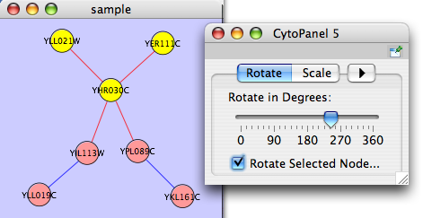
After
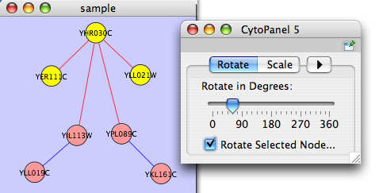
Scale

The Layout → Scale menu opens the Scale dialog. Scale will scale the position of the entire network or of the selected portion of the network. Note that only the position of the nodes scale, not the node sizes. Node size can be adjusted using the VizMapper. The image below shows selected nodes scaled.
Before
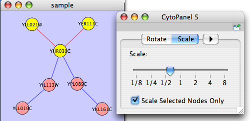
After
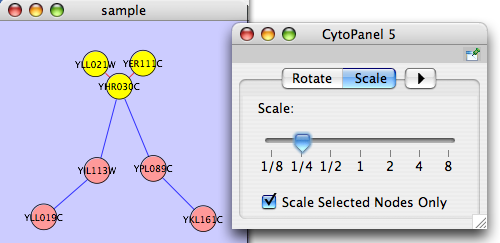
Align/Distribute
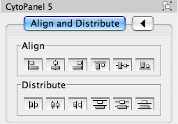
The Layout → Align/Distribute menu opens the Align/Distribute dialog. The Align buttons of the dialog provides different options for either vertically or horizontally aligning selected nodes against a line. The differences are in what part of the node gets aligned, e.g. the center of the node, the top of the node, the left side of the node. The Distribute buttons evenly distribute selected nodes between the two most distant nodes along either the vertical or horizontal axis. The differences are again a function what part of the node is used as a reference point for the distribution. The table below provides a mapping from button to name to result.
Table 13.
Button | Before | After | Description of Align Options |
| 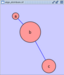 | 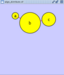 | Vertical Align Top - The tops of the selected nodes are aligned with the top-most node. |
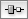 | 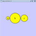 | Vertical Align Center - The centers of selected nodes are aligned along a line defined by the midpoint between the top and bottom-most nodes. | |
| 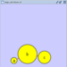 | Vertical Align Bottom - The bottoms of the nodes are aligned with the bottom-most node. | |
| 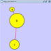 | Horizontal Align Left - The left hand sides of the selected nodes are aligned with the left-most node. | |
|
| Horizontal Align Center - The centers of selected nodes are aligned along a line defined by the midpoint between the left and right-most nodes. | |
| 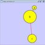 | Horizontal Align Right - The right hand sides of the selected nodes are aligned with the right-most node. |

Table 14.
Button | Before | After | Description of Distribute Options |
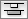 | 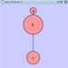 | 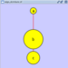 | Vertical Distribute Top - The tops of the selected nodes are distributed evenly between the top-most and bottom-most nodes, which should stay stationary. |
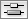 | 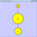 | Vertical Distribute Center - The centers of the selected nodes are distributed evenly between the top-most and bottom-most nodes, which should stay stationary. | |
| 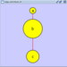 | Vertical Distribute Bottom - The bottoms of the selected nodes are distributed evenly between the top-most and bottom-most nodes, which should stay stationary. | |
| 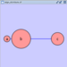 | 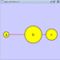 | Horizontal Distribute Left - The left hand sides of the selected nodes are distributed evenly between the left-most and rigth-most nodes, which should stay stationary. |
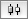 | 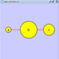 | Horizontal Distribute Center - The centers of the selected nodes are distributed evenly between the left-most and rigth-most nodes, which should stay stationary. | |
| 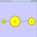 | Horizontal Distribute Right - The right hand sides of the selected nodes are distributed evenly between the left-most and rigth-most nodes, which should stay stationary. |

In addition to the ability to click on a node and drag it to a new position, Cytoscape now has the ability move nodes using the arrow keys on the keyboard. By selecting one or more nodes using the mouse and clicking one of the arrow keys (←, →, ↑, ↓) the selected nodes will move one pixel in the chosen direction. If an arrow key is pressed while holding the shift key down, the selected nodes will 10 pixels in the chosen direction.
Mouse movement has also been enhanced. If the shift key is held down while dragging a node, the node will only move horizontally, vertically, or along a 45 degree diagonal.